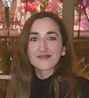

Hello, I'm Mirina 🤓

I'm a student in Ieseg, i'm in my first year of college. I study general management at La Defense.
Dance and Music
I appreciate challenge, which led me to do classical dance for seven years, modern jazz dance for four years but also to study Musical Theory and to play the piano in my spare time. I have also done singing and have performed singing while playing the piano.
The Associative environment
In my spare time, I am very committed to volunteering which has allow me to develop various skills such as teamwork, adaptability and communication skills. I am a member of national charities such as AFSED (standing for « Association Française des Syndromes d’Ehlers Danlos » meaning French association of the Ehlers Danlos Syndrome) which raises awareness about the syndrome and support people with this syndrome. With this charity, I have participated in the « téléthon » (walk for rare disease) since a very young age. I have also been part of an advertising campaign in the context of Rare Disease day in 2018 for an organisation named « Eurordis » (European organisation for rare diseases), with researchers, doctors and disabled. I was interviewed to share my experience with my disability but also to share a positive message. Finally, I have been part of an association called Anti Food Wasting which redistributes food from shops that cannot be sold anymore. This experience has allowed me to be aware of the importance of food wasting but also to see poverty and understand the importance of giving.
Travel
I enjoy travelling and discovering new cultures. By going to Morocco, South Africa, Vietnam, India and other countries I have been able to acquire knowledge on various cultures and to become more open-minded. I have also acquired language skills through these travels. In fact, I did two linguistic trips to Ireland and to Scotland which has allowed me to improve my English.